Tiene un gran tamaño coronal y radicular. Tiene una corona de forma pentagonal, sus dimensiones mayores son las vestibulopalatinos con respecto a las mesiodistales, es el diente más largo, en total, de la dentición humana, y sólo tiene una raíz. Es característico que en el borde incisal el brazo cuspideo mesial sea más largo que el distal, justo al revés que en el canino inferior.
Sus contactos dentarios son:
-Proximales: contacta distalmente con el primer premolar superior y mesialmente con el incisivo lateral superior. -Oclusales: ocluye con la vertiente distal del canino inferior y con la vertiente mesial del primer premolar inferior.
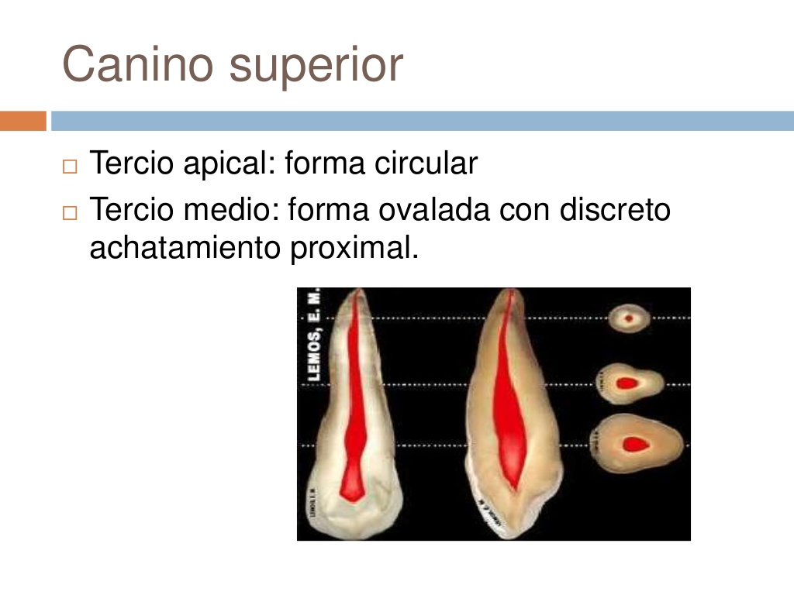
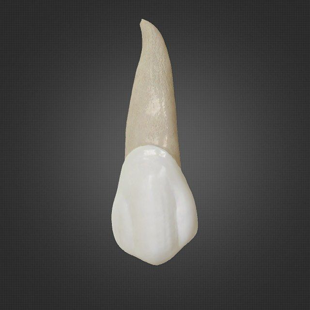
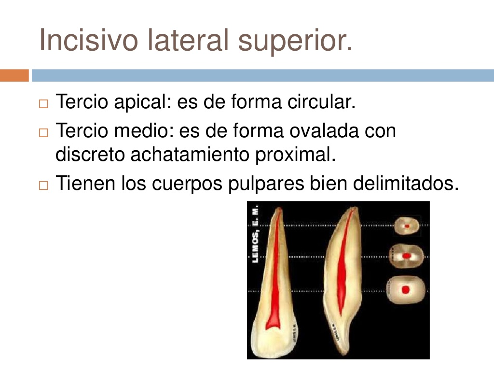
Las muelas del juicio, cordales o terceros molares son el tercer molar, que suele aparecer a las edades entre 18 y 25 años, pudiendo incluso no hacerlo nunca, aunque pueden aparecer en edades más tempranas o mucho más adelante. En algunas ocasiones no erupcionan las cuatro muelas, erupcionando solo algunas de ellas.
Se llaman muelas del juicio ya que a la edad en que aparecen las personas tienen un juicio más desarrollado y completo que cuando aparece el resto de la dentición definitiva.?
Existen cuatro muelas cordales, una por cada cuadrante bucal, y se sitúan en la última posición de la línea de la dentadura, al fondo de la boca. Las muelas del juicio suelen afectar a otros dientes al desarrollarse, empujándolos o saliendo "torcidos".
Su anatomía varía mucho, puede tener entre una y cuatro raíces y entre uno y seis conductos y puede tener conductos en forma de C. Puede estar significativamente inclinado en sentido distal y/o vestibular lo que crea un problema aún mayor para el acceso comparado con el segundo molar.3? Cuando esto ocurre se suelen extraer.
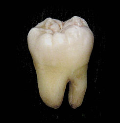
Tiene un papel muy importante en el sector anterior porque es el mayor condicionante de la estática dental del individuo. Tiene una corona trapezoidal, posee una única raíz y tiene una dimensión vestibulolingual mayor que la mesiodistal. Es el incisivo más grande de todos y su longitud inciso cervical de la corona es la mayor de toda la dentición humana.
Al unirse el borde incisal con las caras proximales forma dos ángulos, uno mesioincisal, en un plano más inferior y con un vértice más marcado (ángulo de 90 grados), y el otro, distoincisal, en un plano más superior y redondeado.
Cara palatina: la forma de trapecio se exagera por la mayor convergencia de los lados proximales. Presenta en su porción central y en los tercios incisal y medio una depresión, delimitada arriba por el cangulo (proceso cervicopalatino o 4� lóbulo), y lateralmente por los rebordes marginales, alcanzando el ángulo respectivo sólo el reborde mesial.
Sus contactos dentarios son: -Contactos proximales: por su cara mesial contacta con el incisivo central superior contralateral, y por su cara distal contacta con la cara mesial del incisivo lateral correspondiente. -Contactos oclusales: su cara palatina contacta con el borde incisal de los incisivos centrales inferiores. En su cara vestibular tiene un borde incisal trilobulado en los dientes recién erupcionados y con dos escotaduras, mesial y distal. Posee un cangulo en su cara palatina, esto es, un abultamiento de forma semiesférica situado en el tercio cervical, que corresponde al cuarto mamelón de formación del diente.
Tiene una raíz única, de una longitud 1,25-1,50 veces la longitud coronaria, de forma cónica, superficie lisa, raramente presenta surcos, lo más frecuente es que sea recta, aunque a veces presenta curvaturas en el tercio apical y hacia distal. Suele tener 3 cuernos pulpares en los dientes jóvenes.
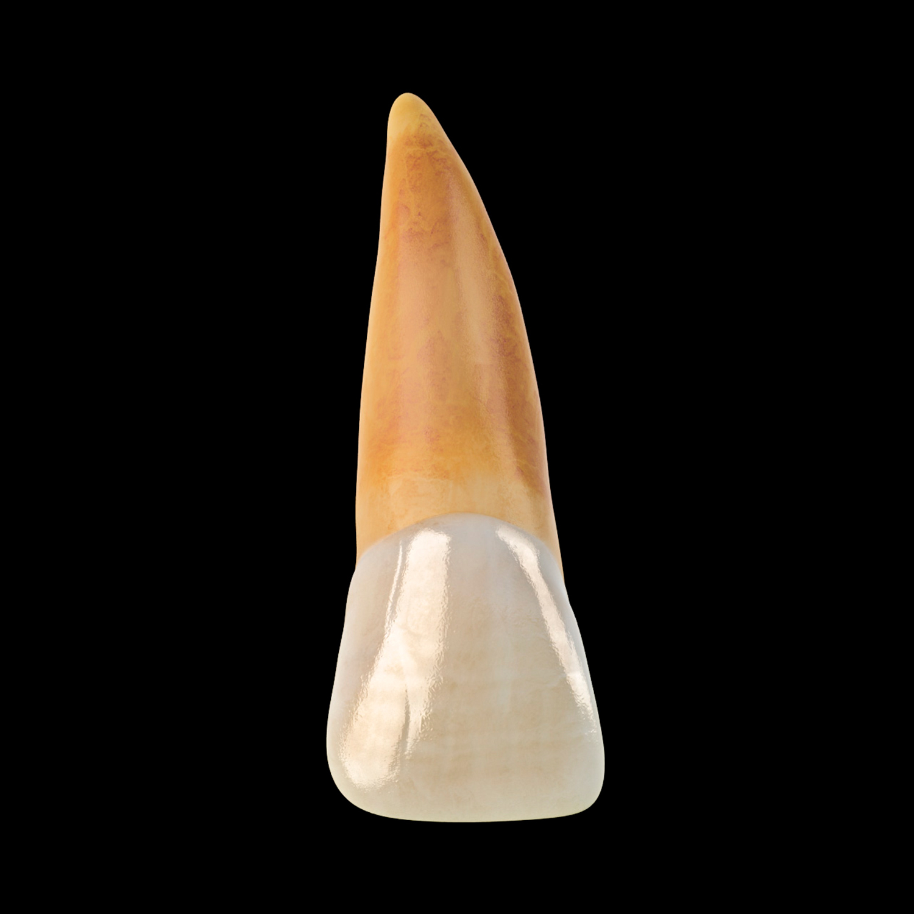
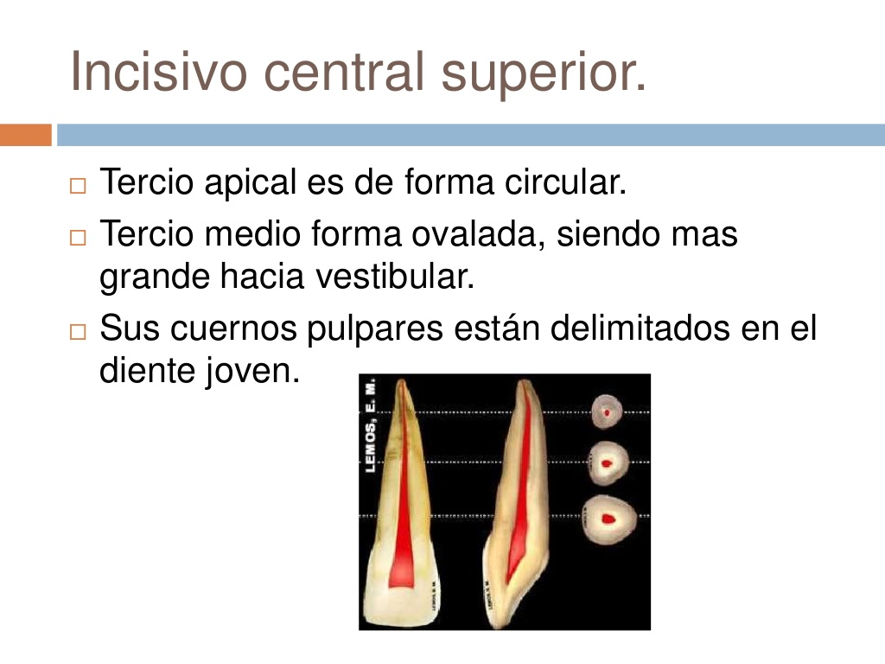
Se encuentra en proceso de reducción o desaparición evolutiva, es frecuente que no aparezca, uno o los dos, o en forma de diente conoide. Este proceso de reducción o desaparición también es común en el tercer
molar. Tiene forma trapezoidal, unirradicular, es más pequeño que el incisivo central superior y su dimensión vestibulolingual es menor que la mesiodistal. La dimensión incisocervical es mucho mayor que la mesiodistal.
Sus contactos dentarios son: -Proximales: está situado distalmente al canino superior y mesialmente al incisivo central superior. -Oclusales: contacta con la mitad distal del incisivo lateral inferior y la mitad mesial del canino inferior. Al igual que el incisivo central superior posee un cangulum en su cara palatina. Tiene una única raíz, en ocasiones presenta surcos en sus cara mesial y distal, es muy frecuente que la raíz del incisivo lateral superior presente una curvatura en su tercio apical, casi siempre con direcciósn distal y palatino.
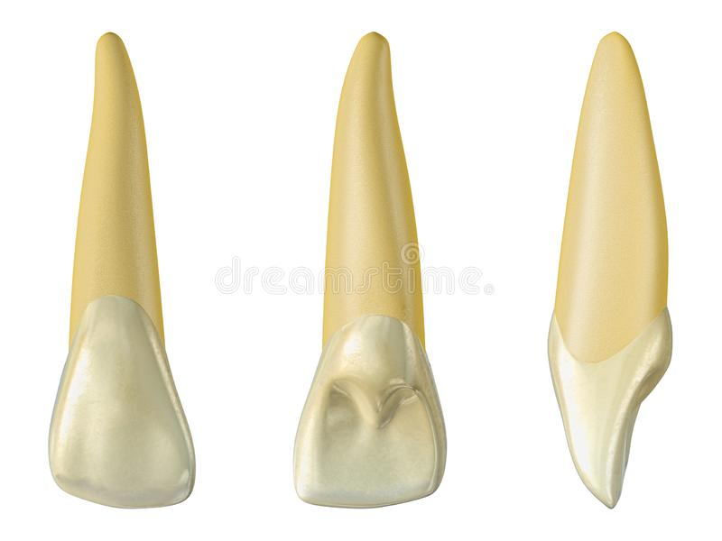
Este primer molar es el primero en erupcionar, siendo ésta la piedra angular de la oclusión. El primer signo de calcificación de este diente puede producirse incluso antes del nacimiento. El esmalte completo tardará de tres a cuatro años en completarse; brotará alrededor de los seis años, pero la raíz completa no estará formada hasta los nueve o diez años. Otras características son: -Longitud coronaria: 7,7 mm (aprox.). -Diámetro mesiodistal: 10,3 mm (aprox.). -Diámetro mesioincisal de la corona aneud del cuello: 8 mm (aprox.). -Diámetro vestibulopalatino: 11,8 mm (aprox.). -Curvatura de la línea cérvico mesial: 2 mm (aprox.). -Curvatura de la línea cervico distal: 2 mm (aprox.). -Ocluye con 3/4 partes distal del 1.er molar y 1/4 mesial del 2.do molar inferior., posee la corona más ancha en sentido vestibular-oclusal. Es el diente de mayor tamaño. Tiene cuatro cúspides funcionales: dos vestibulares y dos palatinas. Tiene una amplia superficie oclusal y es multifactorial además de contar con un fuerte soporte radicular. Relación con las atmns. Posee 3 raíces: 2 vestibulares y 1 palatina.
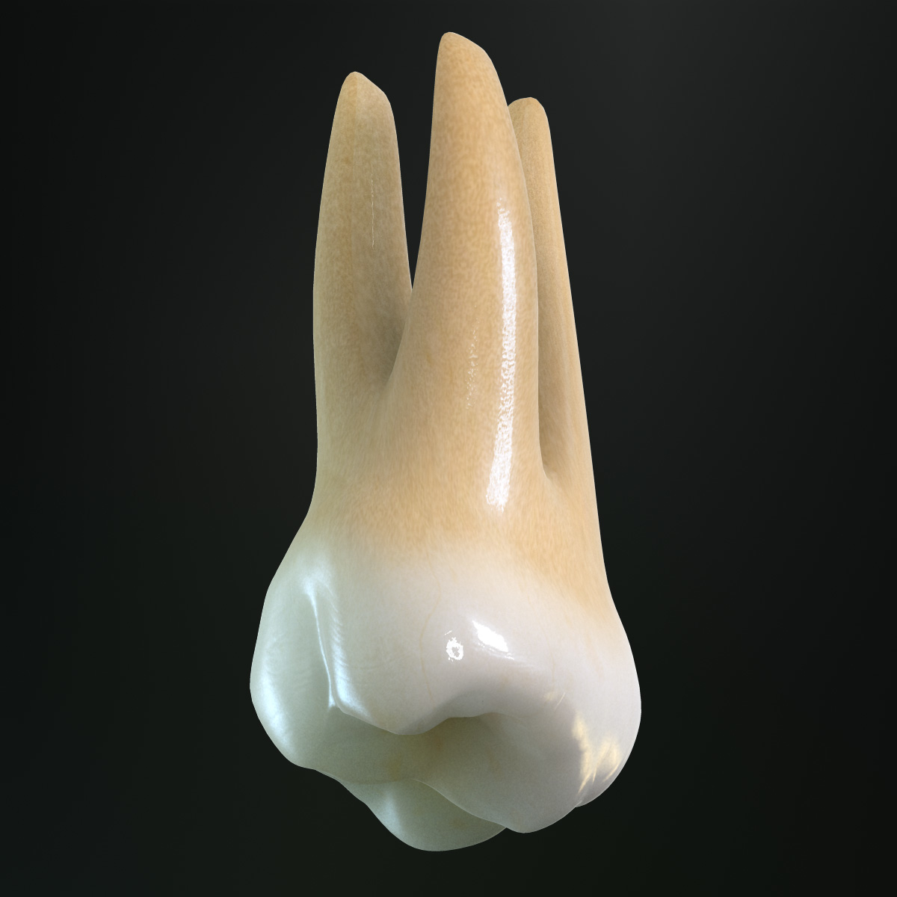
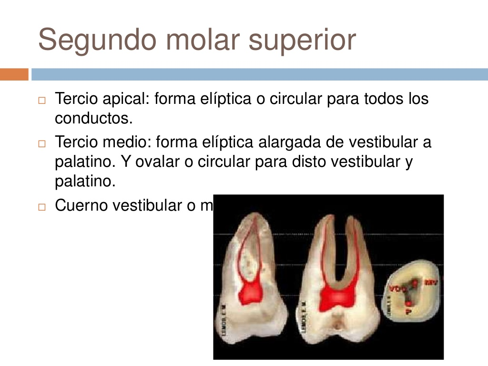
Tienen una corona con forma pentagonal, mayor dimensión vestibulopalatino a la mesiodistal. Poseen dos cúspides: vestibular, de mayor tamaño y forma cuadrangular, y palatino, más pequeña.
Sus contactos dentarios son: -Proximales: el primer premolar superior contacta mesialmente con el canino superior y distalmente con el segundo premolar superior. El segundo premolar superior contacta mesialmente con el primer premolar superior y distalmente con el primer molar superior. -Oclusales: la vertiente mesial del primer premolar superior contacta con la vertiente distal del primer premolar inferior, la vertiente distal del primer premolar superior contacta con la mesial del segundo premolar inferior y la vertiente mesial del segundo premolar superior contactará con la vertiente distal del segundo premolar inferior y la distal del segundo premolar superior con la mesial del primer molar inferior. Cúspides Pueden presentar una a dos raíces, se encuentran dos raíces más frecuentemente en el primer premolar superior. Si tenemos una raíz única presentará un surco mesial. Es muy frecuente una doble curvatura en el tercio apical, tiene una convergencia por el lado palatino, se puede notar muy claramente si lo vemos por el lado oclusal. El primer premolar superior tiene una corona de mayor tamaño que el segundo premolar superior, la cara oclusal es más asimétrica en el primer premolar superior.
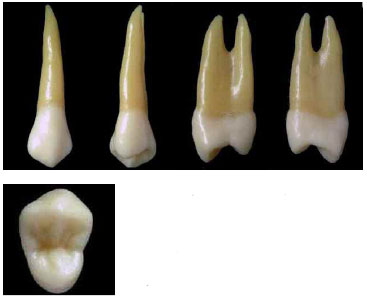
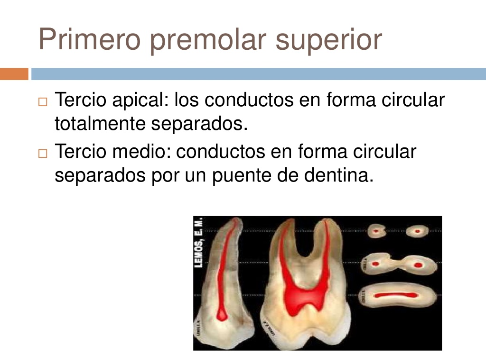